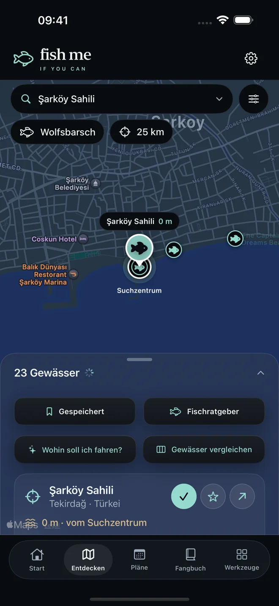
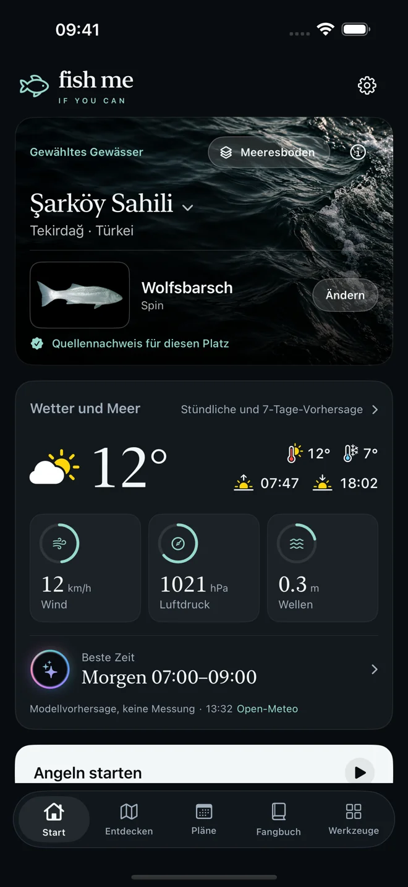
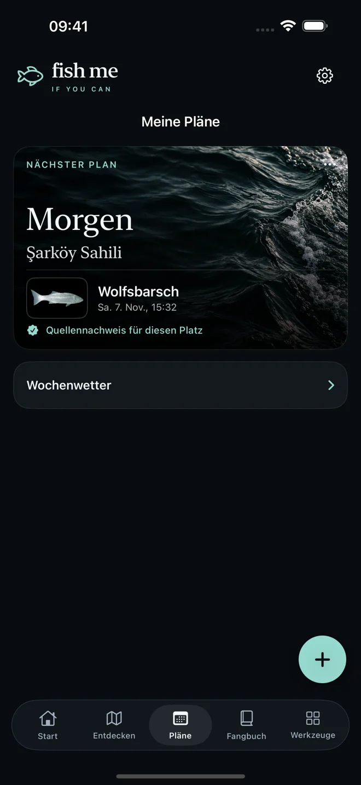
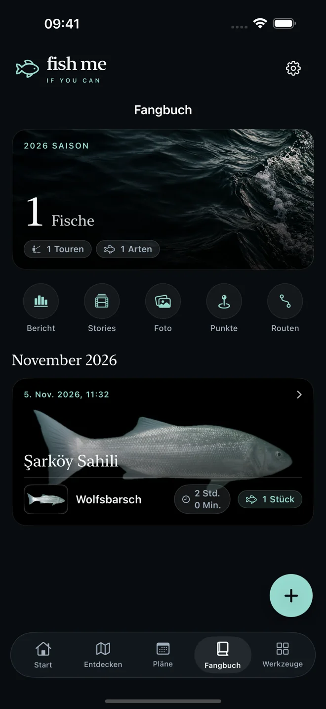
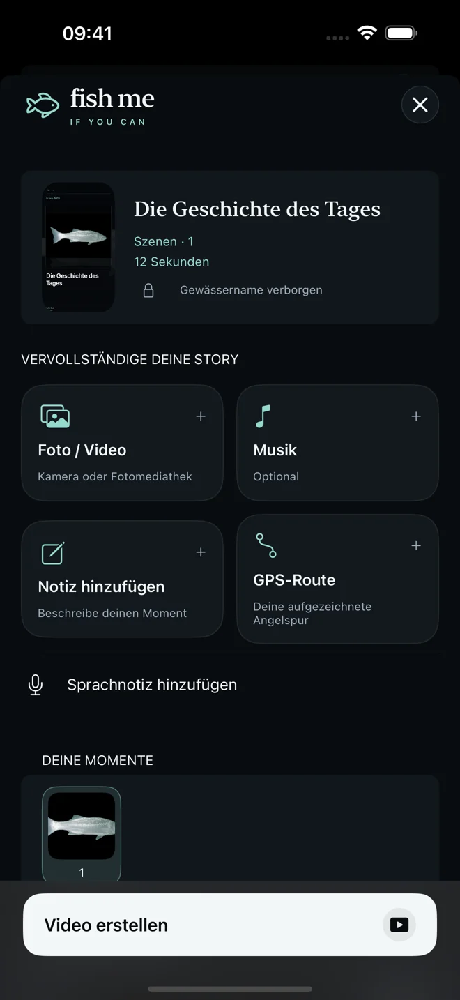

01 / Entdecken
Ein Platz zum Wiederkommen.
Entdecke Angelplätze in der Türkei und Europa nach Zielfisch, Standort und Entfernung. Sieh Quellen und Prüfstatus und speichere deine Lieblingsplätze.

JEDER ANGELTRIP HAT EINE GESCHICHTE
Vom nächsten Angelplatz bis zur Geschichte zum Teilen. Plane nach lokalen Bedingungen, halte deine Fänge fest und bewahre die Route deines Tages — an einem Ort.
App entdecken
FISH ME IF YOU CAN / iOSDEIN NÄCHSTER TRIP
Angelplatz finden. Bedingungen prüfen. Trip starten. Deine Fänge, Notizen und Erinnerungen bleiben zusammen.
Entdecke Angelplätze in der Türkei und Europa nach Zielfisch, Standort und Entfernung. Sieh Quellen und Prüfstatus und speichere deine Lieblingsplätze.

Prüfe Wind, Luftdruck und stündliches Wetter zusammen mit deinem Angelplan. Sieh verfügbare Meeresbodenquellen an, bevor du einen Platz auswählst.

Ordne Fänge einem Trip zu. Ergänze Fotos und Notizen, zeichne optional eine GPS-Route auf, speichere Punkte und teile Koordinaten.

DIE GESCHICHTE DEINES TAGES
Verbinde Fotos, Musik, Sprach- und Textnotizen mit deiner optionalen GPS-Route. Mache daraus ein Video, das du mit deinen Lieblingsmenschen teilen kannst.

Angelplätze mit Quellen und klarer Abdeckung. Artennachweis und Angelerlaubnis sind getrennt, ungeprüfte Plätze gekennzeichnet. Meeresbodendaten variieren je nach Ort; die App zeigt vorhandene Quellen, statt Ergebnisse zu erfinden.
FISH ME PRO
Kostenlos herunterladen. Berechtigte neue Abonnenten können Pro 3 Tage kostenlos testen. Danach im deutschen Store 5,99 €/Monat oder 39,99 €/Jahr. Preise variieren je nach Land; Apple zeigt Preis und Testberechtigung vor der Bestätigung.
Automatisch verlängerndes Abo. Kündigung in den Apple-Account-Einstellungen. Vorhandene Einträge bleiben nach Ablauf des Zugangs einsehbar.
Abo-Bedingungen ↗